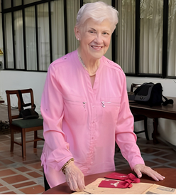

«Sin negar el sentido ecuménico del hombre, he defendido de manera ardorosa y sistemática los valores de lo venezolano y he denunciado en forma angustiada el proceso de disolución promovido en el esqueleto de la sociedad nacional por la presencia de antivalores que desdicen nuestra tradición de pueblo».
«Parafraseando a Rodríguez Legendre al examinar el pensamiento de Briceño Iragorry, Universidad y Juventud no son meros espacios de estudio, sino el auténtico bastión moral e intelectual de la nación. De su unión depende la formación de una conciencia crítica indispensable para defender los valores patrios y frenar el avance del pragmatismo que alimenta la dinámica del antipaís.»
Multimedia
Breve y sentida reflexión sobre la identidad nacional y los valores cívicos propuestos por MBI.
Contenido Destacado
Mario Briceño-Iragorry, el pensador
Profundo análisis sonoro sobre su pensamiento, legado histórico y su incuestionable vigencia en la sociedad actual.
¿Quién fue Mario Briceño-Iragorry?
Exploramos la vida de una figura extraordinaria de la historia intelectual venezolana. Historiador, ensayista y diplomático, consagró su existencia a comprender a Venezuela y señalar los caminos para su fortalecimiento moral y cultural.
Investigación: José A. Paniagua y Jonhangel Sanchez | Diseño: Jonhangel Sanchez
Catálogo de Obras
Adéntrate en la vasta variedad de la obra ensayística e histórica de Mario Briceño-Iragorry. Explora algunas de sus portadas más famosas y descarga sus textos.



Beatriz en su infancia junto a su padre, en el Cerlag Caracas y en Madrid España
Beatriz Briceño-Picón
Humanista y PeriodistaHa querido siempre entrelazar personas, instituciones, cátedras y empresas que trabajan por mantener la vigencia de su pensamiento.
Su empeño ha sido siempre, fortalecer nuestra venezolanidad desde el hogar, la escuela, el campo y los medios de comunicación social, como vía para alcanzar el humanismo integral y solidario abierto a la trascendencia que nuestro mundo reclama.